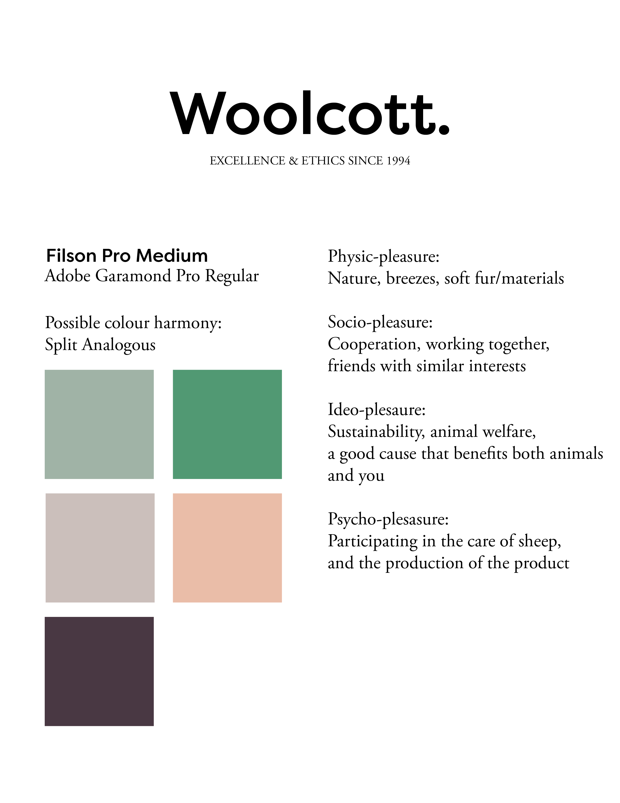
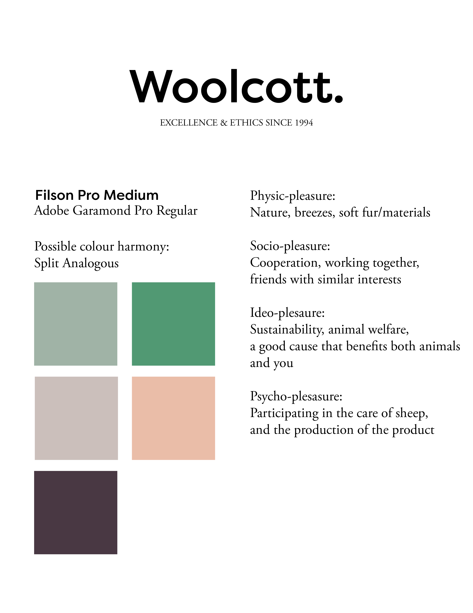
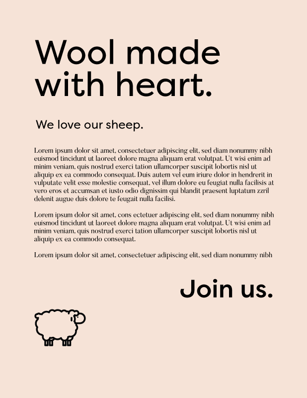
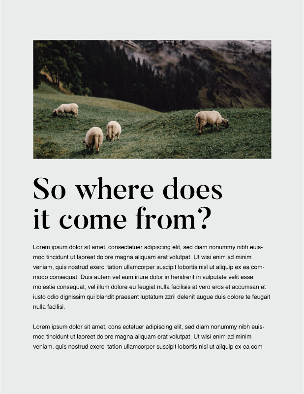
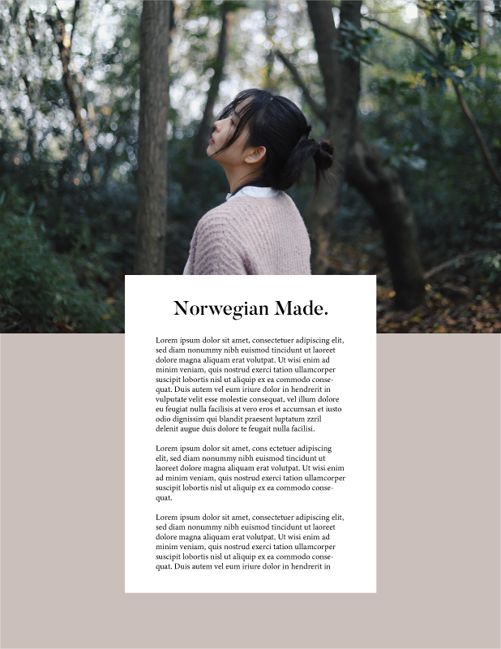

Woolcott - Site Design
Role: Graphic Designer
For this graphic design project, I used Adobe Illustrator & Adobe Photoshop to draft mockups for a fictional ethical wool producer and retailer.
I created a typeface, colour, and moodboard style guide for preparation. I also worked on drafting content variations with vertical rhythm.
 




Site Layout 01

Site Layout 02

Credits
Site images sourced from Unsplash (1, 2) and Wikipedia; body text from Dale of Norway; fictional company title inspired by Vampire Weekend.